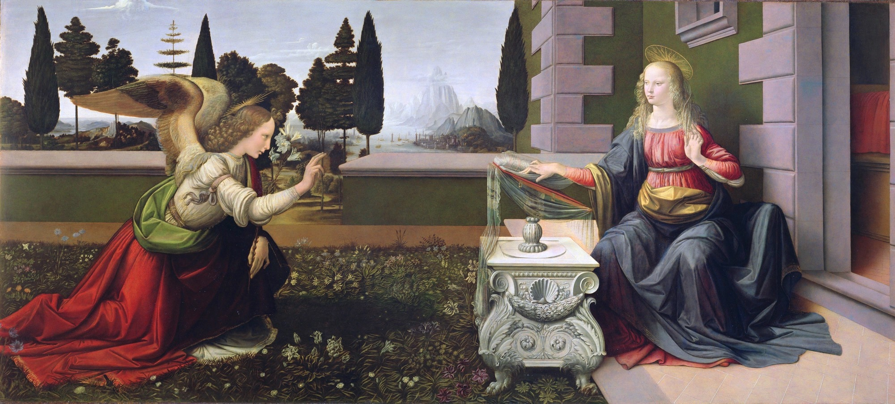

Observer la nature pour peindre le sacré

Comment rendre un ange crédible ?
Dans cette œuvre de jeunesse, Léonard donne à une rencontre surnaturelle la présence d’un événement réel. On y voit déjà les recherches qui traverseront son œuvre : observer la nature, comprendre la lumière et rendre les personnages vivants.
Un ange qui prend corps
Gabriel a un corps, un poids, des vêtements aux plis volumineux et une ombre sur l’herbe. Ses ailes s’appuient sur l’observation des oiseaux. Le messager céleste partage ainsi l’espace de Marie : l’observation du réel rend le miracle plus tangible.
Une profondeur qui dépasse la géométrie
Les architectures organisent l’espace, mais le paysage apporte autre chose. Les montagnes lointaines deviennent plus pâles et leurs contours moins distincts. La couleur et la netteté nous permettent aussi de percevoir la distance. Léonard cherche à peindre le monde tel que notre œil le voit, avec l’air qui s’interpose entre nous et les choses.
Une lumière qui rassemble la scène
Visages, étoffes, végétation et architecture participent au même éclairage. Observez comment la lumière donne du volume aux formes tout en reliant les personnages à leur environnement. La rencontre sacrée prend place dans un monde cohérent et observable.
En quoi cette démarche est-elle nouvelle ?
Léonard n’invente pas seul le volume, les gestes expressifs ou la perspective. Les peintres précédents les exploraient déjà. Sa singularité est de réunir ces recherches grâce à une observation particulièrement attentive de la nature.
Ici, on découvre un jeune peintre qui commence à faire de la peinture une enquête sur le visible.